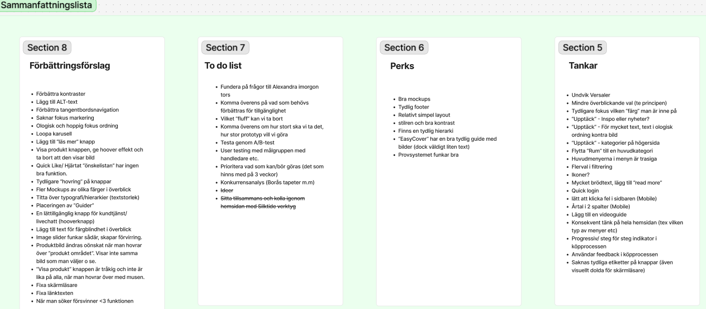
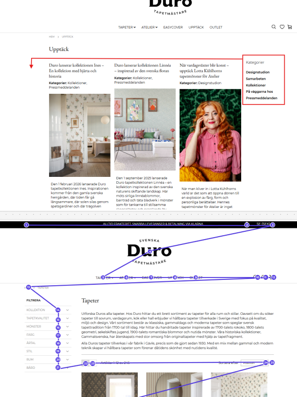
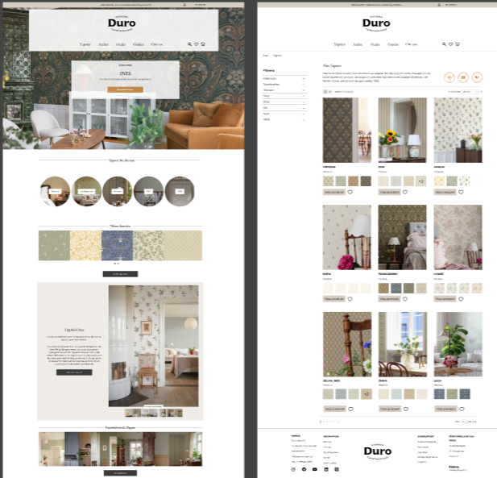
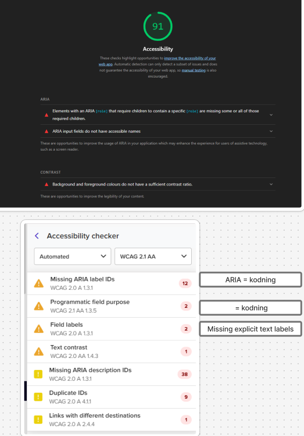

Duro: Website Usability and Accessibility Review
A three-week review of Duro’s website using usability testing and WCAG level AA criteria to guide design recommendations.
UX/UI Designer
Duro
Accessibility Review
3 weeks
WCAG AA
Usability
User Testing
UX Analysis

Finding the obstacles in a familiar website
My aim was to understand where people struggled to find information and what made the site harder to use. I focused on navigation, content structure and accessibility.

What testing showed
Watching people navigate the website revealed places where labels were unclear and important content was difficult to find. Some pages also asked users to work through too much information at once.

Turning observations into recommendations
I brought the usability findings together with a review against WCAG level AA criteria. The resulting suggestions focused on clearer menus, stronger hierarchy, contrast and more readable content.

A proposal, not a claim of compliance
I developed design recommendations and a concept for clearer navigation and content. These were proposals, not changes to the live website or proof of WCAG compliance.
Behind the Design
From review to recommendations
I combined what I saw in testing with accessibility criteria, then developed design ideas that could be tested and refined.
WCAG Analysis

Reviewing contrast, navigation and content structure using WCAG level AA criteria as a reference.
User Testing

Watching where people hesitated, lost their place or struggled to find information.
Design Improvements

Suggestions for simpler menus, clearer hierarchy and better visual guidance.
Final Concept
A proposed direction for making the site easier to understand and navigate.
Key Learnings
Accessibility is usability
WCAG criteria gave me a more reliable starting point than my own impression of what looked readable.
User testing reveals hidden friction
Seeing someone search for an answer often reveals problems that are easy to miss when you already know the site.
Clarity reduces cognitive load
Small decisions about labels, spacing and hierarchy can affect how confidently people find their way.
Reflection
What the review taught me
Accessibility became much less abstract when I could connect a guideline to something a person actually struggled with.
I also practised turning technical criteria into recommendations that made sense for Duro’s website and its users.